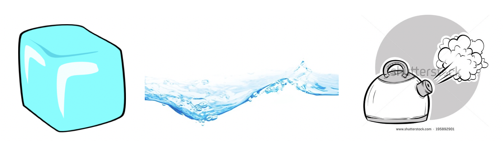
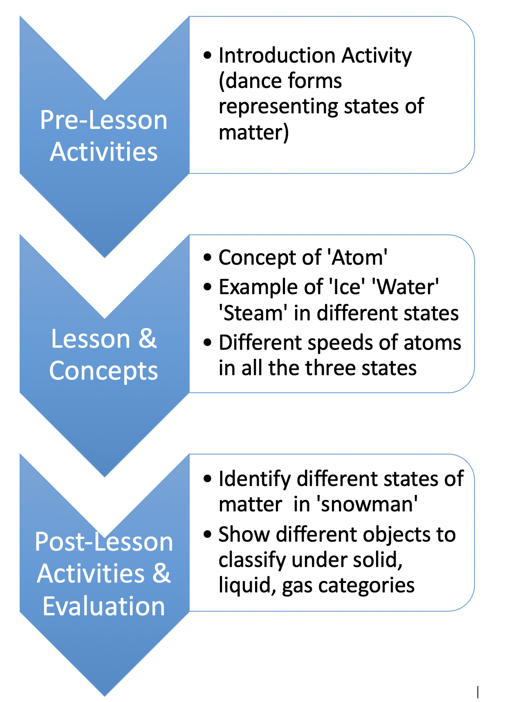
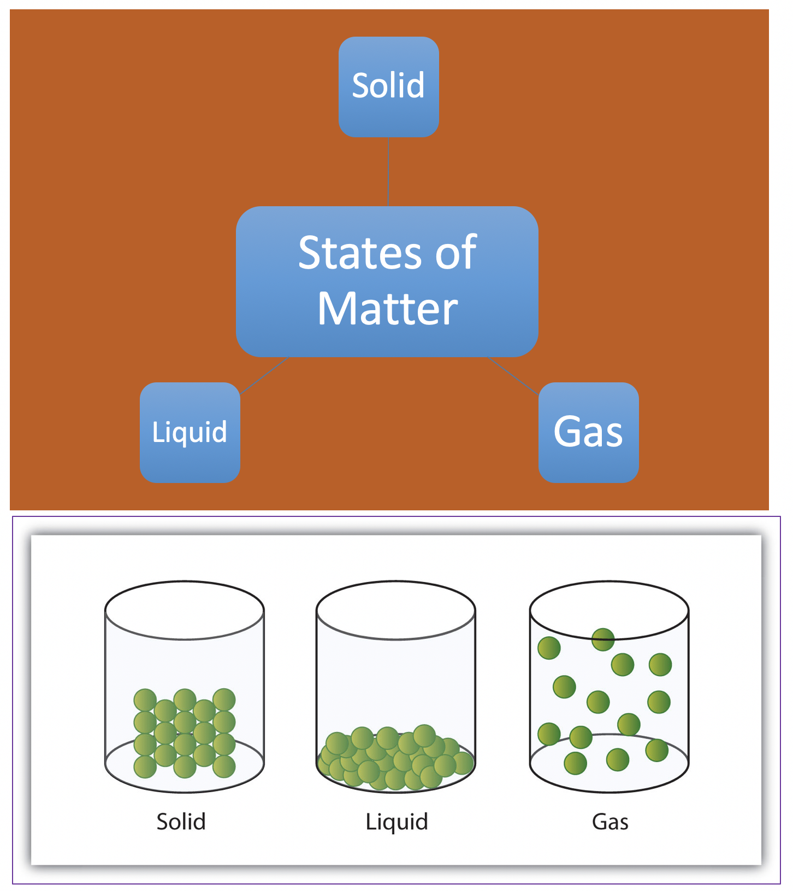
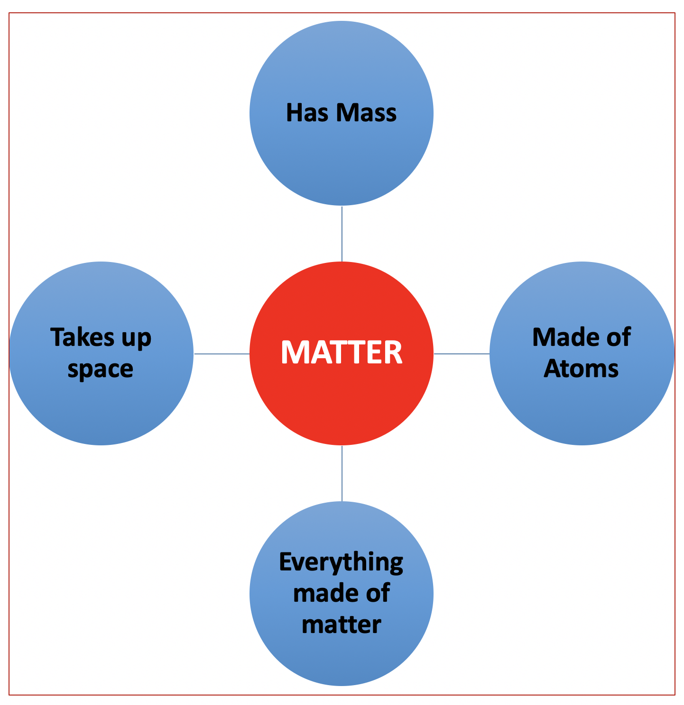

Learning Objectives
(Based on Bloom’s Taxonomy)
Topic: Differentiating between the three primary phases of matter
Audience: Elementary Education (Grades 2-4)
At the conclusion of these sessions, students will be able to:
- OBJECTIVE 1 -- List the three primary phases of matter (Domain: Cognitive; Level: Knowledge)
- OBJECTIVE 2 -- Distinguish basic differences in physical qualities of the three phases of matter (Domains: Cognitive and Psychomotor; Level: Comprehension)
- OBJECTIVE 3 -- Observe the three phases of matter of ice/water/steam (Domain: Psychomotor; Level: Observing)
- OBJECTIVE 4 -- Apply knowledge of the three phases of matter of ice/water/steam to make a snowman (Domain: Cognitive; Level: Application)
Sequence of Instructional/Learning Events
Scene 1: Class enters the environment and is divided into three groups.
Scene 2: Advance organizer commences. During a regularly scheduled movement/dance class, the instructor demonstrates three dance forms that correlate to the physical qualities of the three primary phases of matter for students to observe.
Scene 3: Each group will imitate the instructor and collectively embody, by dance, the three phases of matter. The instructor alternates cueing the three dances by distinct visual representations [ice cube, water, steam] correlated to varying tempos of music.
Scene 4: Students will be asked to compare and contrast the physical attributes of each dance type. Which dance was the most energized/frenetic? Which group looked tight, firm and strong? The students in which set expanded and filled the room? [OBJECTIVE 2]
Scene 5: With students seated at desks or tables (whether immediately following or at a later lesson), the instructor introduces the idea of an ‘atom’ as the basic, fundamental building block of matter. The instructor correlates the students in the dance as individual atoms. When atoms interact with each other, they create something similar to how the students created a dance. Individually, each atom (student) doesn’t seem like much, but together they can create something bigger and more noticeable.
Scene 6: The instructor displays images of drinking water in a glass, ice, and steam for the students to identify. The instructor asks the students if these are made up of the same type of matter. [OBJECTIVE 3]
Scene 7: The instructor explains that drinking water, ice, and steam are all made up of the same types of matter and contain the same building blocks (atoms). When the atoms “dance” with each other differently, they make different things. These different presentations of the same type of matter are known as phases of matter. There are three phases of matter: solid, liquid, and gas. [OBJECTIVE 1]
Scene 8: The instructor asks students to match each phase of matter (liquid, gas, solid) to the different types of dance moves.
Scene 9: The instructor introduces the concept of atoms moving at different speeds (similar to the way the students moved in the dance). When they move fast, they create heat and expand to fill a room (gas). When they stop moving, they come together and form tight links (solid). When they are moving but more slowly, they can flow together as one (liquid). [OBJECTIVE 1, 2]
Scene 10: The instructor correlates ice, drinking water, and steam to the different phases of matter and asks how the atoms in each phase are moving. [OBJECTIVE 1,2]
Scene 11: Instructor displays a picture of a snowman and asks students to consider how a snowman goes through the different phases of matter during its lifecycle (snow falls to the ground (solid), solid-phase is used to make the snowman >> eventually the snowman melts into water (liquid) >> when the sun comes up, the melted snowman will evaporate into the air (gas). [OBJECTIVE 4]
Advanced Organizer
As described above in Scenes 1 through 4, the advanced organizer (based on Mayer's, 1979 theory) builds on students’ prior knowledge of choreographed dance, which they have been learning in their weekly movement/dance class. This particular advance organizer is a sort of psychomotor script that is prompted by these three visuals, or organizational cues:

The instructor teaches the following choreography. Upon cueing the ice cube, students come together in a barely moving circular dance in which their arms are tightly linked; slow-paced music plays in the background. Upon cueing the water, the students loosen their grips on one another, expand the diameter of the circle, and begin to move lethargically; moderately-paced music will be heard. Upon cueing the steam, students release their connections and dance vibrantly across and throughout the room; fast-paced music will be playing.
Components of advanced organizer:
- Have a short set of verbal or visual information: This advance organizer (dance lesson) contains the verbal and visual cues described and shown above.
- Be presented prior to learning of a larger body of to-be-learned information: The dance would be taught in a movement/dance class prior to the introduction of states of matter.
- Contain no specific content from the to-be- learned information: The dance foreshadows specific content about states of matter with its visual cues, but at this stage, is only coding the visuals to their respective choreographies.
- Provide a means of generating the logical relationships among the elements in the to-be-learned information: By setting up a tripartite framework, the dance organizes the students to think in threes, and to link states of matter to physical embodiments of states of being.
- Influence the learner's encoding process: Learners at this age are still learning with their bodies; enabling them to encode this knowledge through both the cognitive and psychomotor domains reinforces the learning.
Concept Map
Hierarchical map for the instructor to conduct the lesson:

Representation of concept material for the students:


Environmental Interface Design
Learning will take place in a synchronous learning environment within a classroom setting. A dichotomous format will facilitate both the experiential (dance) and didactic (lecture/discussion) component of this learning activity. The initial setup will be open to allow for free movement that will be utilized during the dance portion of this learning session. The latter portion will be set up with desks forming a semicircle with the instructor standing in the center.
This will allow all students to sit at the front of the classroom promoting equal engagement. This type of physical setup also facilitates group discussion so the students are facing each other. The instructor can also more easily flow through the classroom to ask questions to the entire class or to specific students. The front of the classroom will also have a projector connected to a computer to display images and onscreen text.
Theoretical Framework
Information Processing Theory (Atkinson & Shiffrin, 1968)
Dual-Coding Theory (Pavio, 1986)
Schema Theory (Rumelhart, 1980)
The diagrammatic representations and dance activity will help establish a mental model for students that they can use to understand the constituent structure of the different states of matter. It can be extended beyond textbook knowledge to the real-world by applying the mental model for the classification of objects around them. Significantly, because the concepts are being taught with different forms, using verbal, visual and physical coding, a separate schema is created that has the potential of being accessed together or independently. Thus, even if one cue is not present, another one may trigger a relevant schema. In addition, eventually when the schema will get automated, there won’t be any need of providing the cues for it because the student will be able to respond to it by activating those schematic networks. The transfer of learning from one context to another will further help in deeper and meaningful processing of schema related to the classification of states of matter.
For a detailed description of the project & references, please access the design document
here.
Team Members : Elizabeth Larsen, Heena Gulati, Akash Alexander
Supervised by: Elizabeth McAlpin